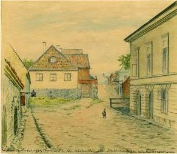

|
Stigbergsgatan väster om Renstjernas gata. (Sandbacksgatan) Bilder från väster. |
|
|
Stigbergsgatan väster om Renstjernas gata. (Sandbacksgatan) Bilder från väster. |

Stigbergsgatan 3-7. (Sandbacksgatan, Kv Mäster Mikael). Stigbergsgatan österut  Stigbergsgatan 6, 7 (Kv Mäster Mikael, Sandbacken Mindre). Stigbergsgatan mot öster från Nytorgsgatan. Till vänster Kv Mäster Mikael, till höger Sandbacken Mindre. Till vänster nr 5, rakt fram nr 7. Till höger nr 6. (Fritz Ahlgrensson, akvarell, 1901)
|
  2001  |
  Hörnet Katarina Östra Kyrkogata (nuv) och Stigbergsgatan 1 år 1906 |